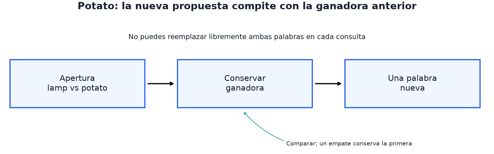

22 · Interactivos
Nivel 4 — Nivel IOAI · Ruta de Aprendizaje
¿Qué preguntarías si cada respuesta consumiera uno de tus intentos? Aquí no recibes de una vez toda la información: tus decisiones determinan qué observas después. La calidad de una pregunta depende de lo que ya sabes, de las preguntas permitidas y de cómo se puntúa terminar.
Los embeddings del módulo 12 y las probabilidades del 18 ayudan a representar incertidumbre. Pero elegir una acción exige considerar también el estado del juego y el costo de conseguir información.

La información disponible depende del estado de la conversación. Conservar la ganadora restringe la siguiente comparación; un oráculo que dejara elegir libremente ambas palabras resolvería un problema diferente.
Qué cambia cuando hay un juez en vivo
En una predicción habitual, observas la entrada y devuelves una respuesta. En una tarea interactiva hay un diálogo: tu programa actúa, el juez responde y esa respuesta cambia la siguiente decisión.
Se parece a los problemas interactivos de la IOI. Estas tareas IOAI muestran distintas formas de ese diálogo:
| Tarea | El diálogo | Presupuesto |
|---|---|---|
| The Analytical Language of John Wilkins (2026, at-home) | preguntas sí/no sobre un animal oculto | 15 preguntas |
| Potato (2026, día 1) | «¿cuál de estas dos palabras se parece más?» | 30 turnos |
| Concepts (2025, día 1) | das pistas y otra IA adivina | llamadas al LLM |
El protocolo: mensajes que cambian el estado
Potato usa un objeto JSON por línea, por stdin/stdout. Otras tareas pueden
exponer una API: verifica cada enunciado. La receta para ese transporte es
Protocolo JSON con el juez. Este fragmento muestra solo el transporte;
requiere sus imports y responder, además de una estrategia que interprete
los mensajes de inicio, respuesta y terminación de la tarea:
def jugar(estrategia, entrada=sys.stdin, salida=sys.stdout):
for linea in entrada:
linea = linea.strip()
if not linea:
continue
respuesta = estrategia(json.loads(linea))
if respuesta is None:
break
responder(respuesta, salida)
stdoutpertenece al protocoloEl juez interpreta cada línea como un mensaje JSON. Un
print()de depuración en ese canal introduce un mensaje inválido;stderrpermite observar el programa sin alterar la conversación.
flush hace que el mensaje salga del buffer. Sin él, jugador y juez pueden
quedar esperando aunque la respuesta ya esté calculada. Son restricciones
reales de comunicación, no pasos adicionales de aprendizaje.
Un juez local debe conservar el contrato
El repositorio incluye herramientas/juez_potato.py, una implementación pequeña
con estado, apertura, empate, victoria, límite y score. Este ejemplo usa su
API en memoria desde la raíz del repositorio. Sus print son una demostración
local, fuera del canal de comunicación con un juez externo:
from herramientas.juez_potato import JuezPotato
palabras = ["lamp", "potato", "rock", "secret"]
vectores = [[1, 0], [0, 1], [1, 1], [1, 1]]
juez = JuezPotato(palabras, vectores, oculto="secret")
print(juez.iniciar()) # turno 1: lamp vs potato; empate conserva lamp
print(juez.proponer({"new_word": "rock"})) # rock compite contra lamp
assert not juez.terminada # mismo vector no significa palabra exacta
print(juez.proponer({"new_word": "SECRET"})) # victoria en turno 2
print(juez.puntaje) # 1.0La primera propuesta responde a la comparación de apertura y puede ganar en el
turno 1. En cada paso propones una palabra nueva; no eliges una pareja
arbitraria. same conserva la primera. Hay hasta 30 propuestas, y una palabra
fuera del vocabulario incumple el protocolo. Una partida sin acierto puntúa cero.
El score local por partida está en 0–1. evaluar_estrategia promedia todas las
partidas y multiplica por 100. Incluir derrotas importa: una política que gana
80% de las partidas en turno 5 tiene score esperado 80; una que gana siempre en
turno 20 también tiene 80. El promedio de turnos ganados preferiría la primera
sin mostrar que pierde una de cada cinco partidas.
Este juez en memoria usa tus embeddings, no los privados, y no implementa el límite global ni el transporte entre procesos. Contrasta la entrega con local_test.py oficial, que controla protocolo y tiempo con embeddings públicos. El score público es orientativo; no se declara equivalente al grader privado.
Las regresiones del repositorio cubren apertura, empates, palabra inválida,
victorias en los bordes de puntuación y agotamiento de turnos. Se pueden ejecutar
con python herramientas/pruebas/competencia.py; son comprobaciones del material,
no un formulario que completar antes de explorar estrategias.
Ganancia de información: la aritmética del presupuesto
Supón ocho candidatos igualmente probables y respuestas sí/no correctas.
Hay log₂(8)=3 bits de incertidumbre. Una pregunta que divide 4/4 deja cuatro
posibilidades cualquiera sea la respuesta: elimina un bit. Dividir 7/1 puede
resolver de inmediato el caso raro, pero normalmente deja siete.
| División de los ocho candidatos | Incertidumbre esperada después | Información ganada |
|---|---|---|
| 4 / 4 | 2 bits | 1 bit |
| 7 / 1 | (7/8)·log₂(7) ≈ 2.456 bits | ≈0.544 bits |
En ese escenario, ceil(log₂(N)) es un límite inferior del número de
preguntas necesario para identificar cualquiera de los N candidatos: para
1.400 da 11. No demuestra que 11 preguntas disponibles alcancen. Si dos
animales responden igual a todas las preguntas permitidas, no pueden separarse
con ellas.
The Analytical Language of John Wilkins da 15 preguntas para unos 1.400 animales. La ganancia de información es una guía útil bajo un modelo de respuestas, no una garantía. Si un candidato concentra casi toda la probabilidad, preguntar directamente por él puede tener sentido, especialmente si acertar termina el juego. La receta Búsqueda por ganancia de información ilustra el caso de filtrado con respuestas fiables:
q = mejor_pregunta(candidatos, disponibles, responde)
respuesta = preguntar_al_juez(q)
candidatos = filtrar(candidatos, q, respuesta, responde)Cuando el juez no piensa como tú
En Potato, el juez usa una representación privada distinta de los embeddings públicos. Eso no implica que responda al azar: una comparación puede ser determinista y discrepar de tu modelo de similitud.
Con filtrado duro, descartas candidatos que tu modelo cree incompatibles. Una sola discrepancia puede eliminar la palabra oculta, aunque aún queden otros candidatos. Una alternativa es conservar pesos relativos y actualizar su plausibilidad con cada respuesta.
El fragmento siguiente supone embeddings normalizados, pesos iniciales
positivos y una respuesta con ganadora estricta. confianza controla cuánto
crees a la comparación de tu modelo; no es una probabilidad calibrada:
import math
def actualizar_pesos(pesos, candidatos, ganadora, perdedora, emb, confianza=2.0):
"""Aumenta el peso relativo de candidatos compatibles con la comparación."""
for idx, c in enumerate(candidatos):
margen = float(emb[c] @ emb[ganadora]) - float(emb[c] @ emb[perdedora])
pesos[idx] *= 1.0 / (1.0 + math.exp(-confianza * margen))
total = sum(pesos) or 1.0
return [p / total for p in pesos]El margen es cuánto más se parece el candidato a la ganadora que a la perdedora en tus embeddings. Un margen positivo multiplica por un factor mayor que 0.5; uno negativo, por un factor menor. Ambos pesos bajan antes de normalizar, pero los compatibles ganan peso relativo.
Con aritmética exacta y factores positivos no se elimina un candidato. Eso
permite recuperarse de algunas discrepancias, sin garantizarlo: el peso correcto
puede volverse diminuto. En secuencias largas, usar log-pesos evita subdesbordamiento.
Un empate same conserva la primera palabra en el juego, pero no demuestra
que sea más cercana; no debe tratarse como una victoria estricta en esta fórmula.
Queda además elegir qué palabra proponer. Maximizar información y maximizar score esperado no son lo mismo: preguntar también consume una oportunidad de acertar y está restringido por la palabra ganadora que conserva el juez.
Cuando el juez es otro modelo
Concepts (2025) es la variante en que el «juez» es una IA que adivina, y tú das las pistas. El bucle es el del módulo 20:
tu generador ─► pista ─► adivinador ─► ¿acertó? ─┐
▲ │
└────────────── iterar ─────────────────────┘
Cada llamada tiene un costo. Un adivinador local puede servir como proxy si su ranking de pistas se parece al oficial, pero esa semejanza necesita evidencia. Una pista que explota una peculiaridad de tu proxy puede transferir mal al modelo que realmente adivina.
En el Individual 2025 (284 participantes), Concepts tuvo media 19.1/100. Publicó baseline 0.20 y Comité 0.54; tu proxy local necesita su propia comparación y esos números no explican su coste ni su fidelidad.
⚠️ Las tres trampas
1. Depurar en stdout. Introduce mensajes ajenos al protocolo y puede
interrumpir la partida.
2. Confundir una partición balanceada con una buena jugada universal. La distribución de candidatos, el costo de preguntar y el premio por acertar pueden favorecer otra acción.
3. Confundir el juez con tu representación del juez. Un empate y una comparación incompatible con tus embeddings no son errores del protocolo. La política necesita interpretarlos sin inventar información que no recibió.
🏋️ Práctica
| # | Ejercicio | Fuente | Qué practica |
|---|---|---|---|
| 1 | Implementa «20 preguntas» sobre 1.000 animales con atributos inventados | Búsqueda por ganancia de información | la aritmética del presupuesto |
| 2 | Explora el juez local de Potato cambiando la palabra oculta y las propuestas | Protocolo JSON con el juez | cómo el estado restringe las decisiones |
| 3 | ⭐ The Analytical Language of John Wilkins: 15 preguntas, ~1.400 animales | abrir en Colab | la tarea preparatoria, con solución medible |
| 4 | ⭐⭐ Potato: con el juez usando otra representación | enunciado oficial | filtrar vs. puntuar, en carne propia |
| 5 | Concepts: escribe el adivinador y optimiza las pistas contra él | repo oficial | el juez como modelo |
Cambiar solo los embeddings del juez permite comparar filtrado y pesos bajo una discrepancia controlada. Es una simulación de desajuste entre representaciones; no reproduce necesariamente el tipo de desajuste privado.
🎯 Mini-desafío (formato IOAI)
Tarea: Potato (IOAI 2026, día 1), completa. Métrica:
1 − 0.02 × máx(0, turno − 10)por partida; 0 si no se resuelve en 30 turnos. Promedio × 100. Datos: vocabulario de 1.602 palabras, embeddings públicos de 2.560 dimensiones, y un juez con representación privada. Límite: 10 minutos para las 120 partidas completas, incluyendo la carga de los modelos.Fíjate en la métrica: los turnos 1 a 10 valen lo mismo (1.00). No hay premio adicional por adivinar en tres frente a diez. Optimiza el score esperado completo, incluidos aciertos de turnos 11–30 y fallos, no solo la probabilidad de llegar antes de diez ni el promedio de turnos ganados.
El tiempo es global: 10 minutos para 120 partidas equivalen a un promedio de 5 segundos por partida, incluyendo carga. No es un límite independiente de 5 segundos para cada juego; gastar más en uno deja menos para los demás.
En el Individual 2026 (440 participantes), el rendimiento normalizado observado tuvo media 8.2/100 y 66% de ceros. No uses esos agregados como score esperado de este juez público ni como descripción de las causas de fallo.
Para poner a prueba la intuición
¿Qué estrategia parece buena si solo promedias turnos ganados, pero mala al incluir fallos?
Construye un empate y comprueba qué palabra se conserva. ¿Por qué importa para la siguiente propuesta?
Cambia los embeddings del juez sin cambiar los del jugador: ¿qué rompe primero, el filtrado o los pesos suaves?
← 21 - Adversarial y robustez · Ruta de Aprendizaje · 23 - El día de competencia →